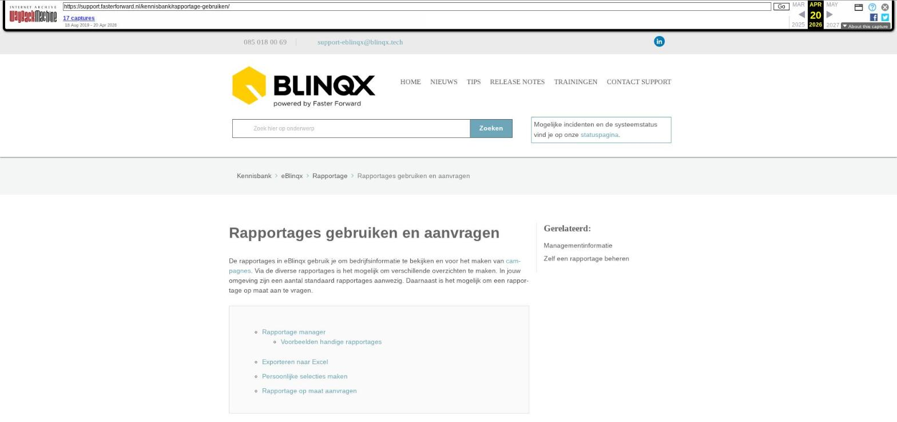

Rapportages gebruiken en aanvragen

Tekstinhoud
Rapportages gebruiken en aanvragen
De rapportages in eBlinqx gebruik je om bedrijfsinformatie te bekijken en voor het maken van campagnes. Via de diverse rapportages is het mogelijk om verschillende overzichten te maken. In jouw omgeving zijn een aantal standaard rapportages aanwezig. Daarnaast is het mogelijk om een rapportage op maat aan te vragen.
Rapportage manager
Voorbeelden handige rapportages
Exporteren naar Excel
Persoonlijke selecties maken
Rapportage op maat aanvragen
Rapportage manager
Via de moduleknop 'Rapportage manager' bovenin het menu (grafiekicoon) en via het Dashboard is een overzicht van alle rapportages te vinden.
Hier bekijk je rapportages. Je opent de rapportage door te klikken op de naam van de rapportage.
Om een geschikte rapportage te vinden, kan je in de rapportagemanager zoeken op kolomnaam. Wanneer je bijvoorbeeld zoekt op 'hypotheek', wordt er in alle rapportages alleen naar kolommen met de term 'hypotheek' gezocht. Zo krijg je alle rapportages die een kolom 'hypotheek' bevatten. Dit is handig als je een rapportage zoekt waar hypotheken van klanten in staan, maar je niet precies weet hoe deze rapportage heet.
Voorbeelden handige rapportages
Hypotheekdatums per dossier: Hypotheek – Overzicht belangrijke datums tot aan passeren
Filteren in verzekeringen van klanten: CRM – Verzekeringsportefeuille
Exporteren naar Excel
Als je de rapportage hebt geopend, kan je deze exporteren naar Excel via de 'Download in Excel' button bovenin.
Persoonlijke selecties maken
Het kan uiteraard zo zijn dat de rapportage meer data bevat dan gewenst. Hierdoor is het onoverzichtelijk. Als je bijvoorbeeld wilt nagaan hoeveel klanten aan een bepaald criterium voldoen, gebruik je persoonlijke selecties. Via persoonlijke selecties kan je in kolommen filteren op bepaalde eigenschappen of criteria. Om op een rapportage een persoonlijke selectie toe te passen, selecteer je eerst de betreffende rapportage waar je mee wilt werken.
Een persoonlijke selectie maken, doe je als volgt:
Je klikt op 'Toon uw persoonlijke selecties'
Je klikt op + naast 'Uw persoonlijke selecties'
Vervolgens voert je de naam in voor de persoonlijke selectie en klikt op opslaan
Nu kan je een filter ingeven door op + te klikken voor 'Huidige filters'
Per filter geef je aan:
Op welke kolom van de rapportage dient een filter te komen?
Waar dient het filter aan te voldoen?
Wat is de waarde?
Het is mogelijk om per persoonlijke selectie meerdere filters in te stellen
Als je de filters hebt ingevoerd en de selectie opslaat, voegt eBlinqx direct de filterfunctie toe. Resultaten die niet door de filter heen komen, worden niet weergegeven. Uiteraard kan je meerdere selecties maken en selecties in een later stadium alsnog wijzigen of verwijderen via de wijzig- of verwijderknop rechts van de betreffende persoonlijke selectie.
Tevens kan je de persoonlijke selectie 'aan of uit' zetten. Klik op de naam van uw persoonlijke selectie om deze aan te zetten en klik vervolgens op de refresh button bovenin het scherm om jouw persoonlijke selectie uit te zetten.
Rapportage op maat aanvragen
Voor maatwerk kan je een aanvraag indienen via support-eblinqx@blinqx.tech. Hiervoor dien je onderstaand bestand te downloaden en zo volledig mogelijk in te vullen met de gewenste output.
BESTAND 'RAPPORTAGE AANVRAGEN' DOWNLOADEN
Laatste update: 15 oktober 2025
Tagged: overzicht
Was deze informatie nuttig?
Ja Nee